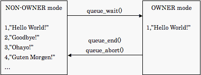

Creating a Message Queue
A Q4M table represents a single queue. A row of a Q4M table represents a single message. To create a message queue, use CREATE TABLE statement with the engine name ``queue''.
mysql> CREATE TABLE my_queue (v1 int not null, v2 varchar(255)) ENGINE=queue;If you need to route messages to more than one subscriber, create table for each of them. You can create any number of Q4M tables.
Sending a Message
To send a message, use INSERT statement as you would do on a ordinally SQL table.
mysql> INSERT INTO my_queue (v1, v2) VALUES (3, "hello world!");
Subscribing to a Message Queue
Queue subscription is controlled by the queue_wait function.
mysql> SELECT queue_wait('my_queue');
+------------------------+
| queue_wait('my_queue') |
+------------------------+
+ 1 |
+------------------------+
1 row in set (0.00 sec)
mysql> SELECT * FROM my_queue;
+----+--------------+
| v1 | v2 |
+----+--------------+
| 3 | hello world! |
+----+--------------+
1 row in set (0.00 sec)
After calling the queue_wait function, only one row at maximum will be returned by succeeding SELECT queries against the table specified by the function (never mix a call to queue_wait with other conditions). If there was no data ready in the queue table, the function would block until any data becomes ready, or a timeout occurs. A new row (if any) is returned everytime the function is being called, automatically deleting the previous row that was previously returned. After handling certain number of rows, and if you want to exit the process, you should call queue_end() function will delete the row that was returned by the last call to the queue_wait() function.
mysql> SELECT queue_end();
Technically, Q4M uses two modes to represent a message queue. In NON-OWNER mode, Q4M tables operate as an ordinally table. In OWNER mode, only the row owned by the connection becomes visible. Three functions are used to switch between views, and to block until messages become available.

By calling the queue_wait function, Q4M table enters OWNER mode. Once entering the OWNER mode, only one row (at maximum) becomes SELECTable, exclusively from the connection, i.e. a row owned by a connection becomes invisible to other connections. When Q4M table is empty, queue_wait function will block until any rows become available. If the function timeouts, no row will be visible by SELECT queries.
After handling the row, clients should either call queue_end function or queue_wait function. The row owned by the connection will be automatically removed from the table. By calling the queue_end function, the table will return to NON-OWNER mode. By calling the queue_wait function, a new row to be handled will become available. When clients fail in handling the row, it should call queue_abort function, that returns the owned-row to the table so that it could be handled by other clients.
The Perl code below is a more formal way of using the queue functions.
while (1) {
# wait until any data becomes avialable (or timeouts)
$dbh->do('select queue_wait("test_table")')
or die $dbh->errstr;
# receive data (only one row becomes ready at once)
if (my @row = $dbh->selectrow_array('select * from test_table')) {
# handle the row
unless (process_row(@row)) {
# if failed, return the row to queue
$dbh->do('select queue_abort()')
or die $dbh->errstr;
}
}
}
# tidy up
$dbh->do('select queue_end()')
or die $dbh->errstr;
Prioritized Subscription
As of version 0.3, it is possible to subscribe to multiple tables at once, by passing a list of tables to the queue_wait function. When any data becomes available, queue_wait function will return the index of the table. The tables are prioritized from left to right, i.e. if more than one table contain any messages, the index of the leftmost table is returned. If none of the table have any data available, 0 is returned. In this form of calling the function, timeout should be specified as well. The example subscribes to two tables with a timeout of 10 seconds.
mysql> SELECT queue_wait('high_priority_table', 'low_priority_table', 10);
Conditional Subscription
As of version 0.4, it is possible to subscribe only to the rows that meet certain conditions. For example, the below call to queue_wait returns only when a row with v<3 becomes avialable, or a timeout occurs.
mysql> select queue_wait('table:v<3');
Following operators are currently supported. Currently, only columns and constants of integral values are supported. There is yet no support for floating point or string variables.
- ~ () ^ * div % mod + - << >> & | = != <= < >= > not && and xor || or
Message Relays
As of version 0.3, Q4M supports message relaying between different MySQL instances, i.e. messages submitted to a Q4M table can be forwarded to another Q4M table running on a different server. The transfer is trustable; rowids are used to prevent message losses and/or duplications.
To run a simple relay, use the q4m-forward script installed into bin subdirectory of the MySQL installation.
% /usr/local/mysql51/bin/q4m-forward \ "dbi:mysql:database=db1;table=tbl1;user=foo;password=XXX" \ "dbi:mysql:database=db2;table=tbl2;host=bar;user=foo"
It is also possible to implement a message broker (a relay that changes the format or the destination of messages). For more information, please refer to the source code of the q4m-forward script.